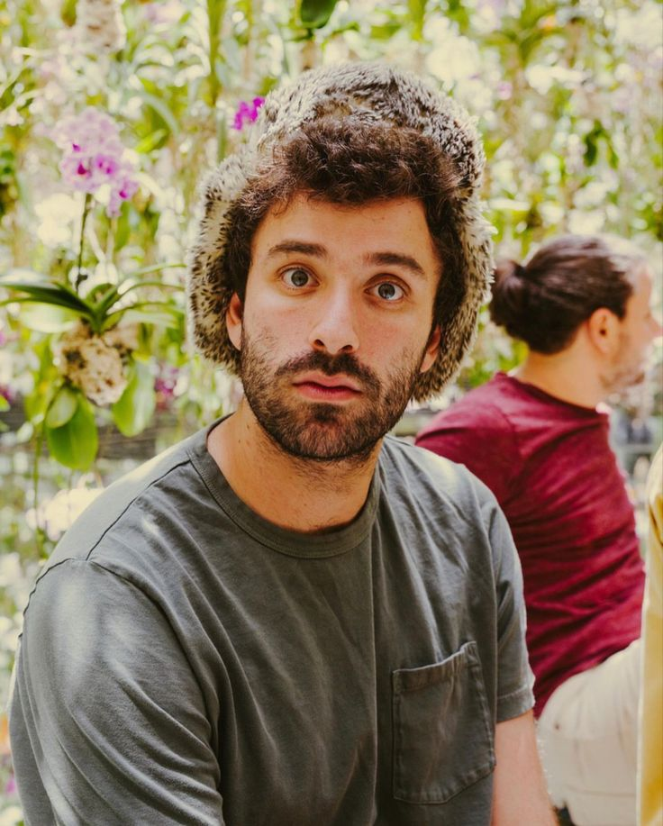

Josh has always been drawn to storytelling, from the myths and epics of the ancient world to sprawling fantasy realms filled with intrigue,
adventure, and discovery. With a background in Classics and an emphasis in Latin, his writing is deeply influenced by ancient history, language,
mythology, and the enduring themes woven throughout classical literature.
Alongside his literary background, he also has extensive experience in technology and software development. With a programming certificate and
years of hands-on work across hobby and professional projects, he has explored everything from game development to software tools and technical problem
solving. That blend of analytical thinking and creative imagination shapes the worlds he creates, allowing him to approach storytelling with both structure
and depth.
His work spans multiple fantasy genres, including medieval and high fantasy, Victorian-inspired steampunk, dystopian fantasy, and occasional ventures into
science fiction. Whether crafting ancient kingdoms, smoke-covered industrial cities, or fractured futuristic societies, he is drawn to stories that explore
human ambition, morality, and the tension between progress and tradition.
Inspired by both classic literature and modern speculative fiction, he strives to create immersive worlds filled with memorable characters, layered histories,
and emotionally grounded stories. For him, writing has never simply been a hobby, it has always been a lifelong passion and a way to bring imagination to life.
Outside of writing, he enjoys studying history and mythology, experimenting with game development projects, streaming his gaming sessions,exploring new technologies,
nd continuing to build the kinds of worlds that first inspired him to become an author.

Q&A
What inspired you to become a writer?
I've always been fascinated by stories and the power they have to transport us to different worlds, explore complex ideas, and connect us on a deep emotional level.
From a young age, I found myself drawn to fantasy and science fiction, where imagination knows no bounds. Writing became a way for me to create my own worlds and share the stories that lived in my head with others.
What are your biggest influences?
My influences are quite varied, but I would say that classic literature, mythology, and modern speculative fiction have all played a significant role in shaping my writing.
Authors like J.R.R. Tolkein, Ursula K. Le Guin, and Brandon Sanderson have been major inspirations for me, as well as the rich tapestry of myths and legends from around the world.
What can readers expect from your work?
Readers can expect immersive worlds filled with memorable characters, layered histories, and emotionally grounded stories. I strive to create narratives that explore human ambition, morality, and the tension between progress and tradition. Whether it's an epic fantasy saga or a dystopian tale, I aim to craft stories that resonate on both an intellectual and emotional level.